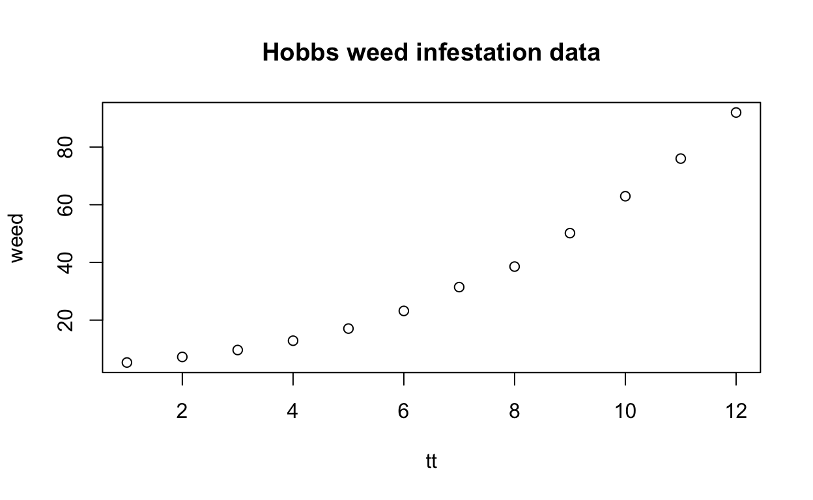

Our Google Summer of Code project “Improvements to nls()” investigated rationalizing R tools for nonlinear regression and nonlinear estimation tools by considering usability, maintainability, and functionality, especially for a Gauss-Newton solver. The rich features of nls() are weakened by several deficiencies and inconsistencies such as a lack of stabilization of the Gauss-Newton solver. Further considerations are the usability and maintainability of the code base that provides the functionality nls() claims to offer. Various packages, including our nlsr, provide alternative capabilities. We consider the differences in goals, approaches, and features of different tools for nonlinear least squares modeling in R. Discussion of these matters is relevant to improving R generally as well as its nonlinear estimation tools.
nls() functionnls() is a Comprehensive R Archive Network (CRAN: https://cran.r-project.org)
tool that has remarkable and wide-ranging features for estimating nonlinear
statistical models that are expressed as formulas.
The function dates to the 1980s and the work related to Bates and Watts (1988) in S (see
https://en.wikipedia.org/wiki/S_%28programming_language%29).
In particular, we note that it
selfStart) models that do not require
initial parameter values.Due to its extensive range of features and prolonged history, the code has become untidy and overly patched, making it challenging to maintain and ripe for improvement in its underlying methods.
Besides the base-R nls() function, we will pay particular attention
to nlsr (Nash and Murdoch (2023)),
minpack.lm (Elzhov et al. (2012)), and gslnls (Chau (2023)) which are
general nonlinear least-squares solvers in the CRAN repository.
While we will provide capsule comments for some other CRAN packages,
those in the Bioconductor (Gentleman et al. (2004)) collection are more
specialized, and those on repositories such as
GitHub (https://github.com) and Gitlab (https://about.gitlab.com),
while interesting, do not have the checking applied to CRAN packages.
Our work aimed at unifying nonlinear modeling functionality in R,
ideally in a refactored nls() function. The primary messages from this work
are:
For R users, we would advise that it is most efficient to carry out
nonlinear modeling or least squares by adapting working scripts, preferably those
with documentation and using recent tools. If there is a suspicion that there
may be ill-conditioning, package nlsr or the example we give in the
section “Comparison notes for formula-setup solutions” below of how to
find singular values of the Jacobian allow these diagnostics to be calculated.
For R developers, we invite and encourage discussion of the design choices, since these have downstream implications for ease of use, adaptation to new features, and efficiency of ongoing maintenance.
onls (Spiess, Andrej-Nikolai (2022)) is used for optimising and estimating nonlinear models
by minimizing the sum of squares of orthogonal residuals rather than vertical
residuals. The objective is therefore different and involves nontrivial extra
calculation. A vignette with the package and the blog article
https://www.r-bloggers.com/2015/01/introducing-orthogonal-nonlinear-least-squares-regression-in-r/
give some description with illustrative graphs. onls appears to be limited to
problems with one independent and one dependent variable. The Wikipedia article
https://en.wikipedia.org/wiki/Total_least_squares presents an overview of some
ideas, with references to the literature. The approach needs a wider
discussion and tutorial examples to allow its merits to be judged than can be
included here.
crsnls (Tvrdík (2016)) – This package allows nonlinear estimation by
controlled random search via two methods. There is unfortunately no vignette.
A modest trial we carried out showed nlsr::nlxb() gave the same results in
a small fraction of the time required by either of the methods in crsnls. The
method discussed in Josef Tvrdík and Ivan Křivý and Ladislav Mišík (2007) claims better reliability in finding solutions
than a Levenberg-Marquardt code (actually from Matlab), but the tests were conducted
on the extreme NIST examples mentioned next.
NISTnls (Bates (2012)) – This package provides R code and data for a set of
(numerically ill-conditioned) nonlinear least squares problems from the U.S. National
Institute for Standards and Technology. These may not represent real-world situations.
nlshelper (Duursma (2017)) – This package, which unfortunately lacks a
vignette, provides a few utilities for summarizing, testing, and plotting
non-linear regression models estimated with nls(), nlsList() or nlme() that
are linked or grouped in some way.
nlsic (Sokol (2022)) – This solves nonlinear least squares problems with optional
equality and/or inequality constraints. It is clearly not about modeling, and
the input and output are quite different from class nls methods. However, there do
not appear to be other R packages with these capabilities.
nlsMicrobio (Baty and Delignette-Muller (2014)) – Data sets and nonlinear regression models
dedicated to predictive microbiology, including a vignette, by authors of the
nlstools package.
nlstools (Baty and Delignette-Muller (2013)) – This package provides several tools for aiding the estimation
of nonlinear models, particularly using nls(). The vignette is actually a journal
article, and the authors have considerable experience in the subject.
nlsmsn (Prates et al. (2021)) – Fit univariate non-linear scale mixture of skew-normal (NL-SMSN)
regression, with details in Garay, Lachos, and Abanto-Valle (2011). The problem
here is to minimize an objective that is modified from the traditional sum of squared
residuals.
nls.multstart (Padfield and Matheson (2020)) – Non-linear least squares regression using
AIC scores with the Levenberg-Marquardt algorithm using multiple starting values
for increasing the chance that the minimum found is the global minimum.
nls2 (Grothendieck (2022)) – Nonlinear least squares by brute force has similar
motivations to nls.multstart, but uses nls() within multiple trials. The author
has extensive expertise in R.
nlstac (Rodriguez-Arias et al. (2020)) – A set of functions implementing the algorithm described in
Torvisco et al. (2018) for fitting separable nonlinear regression curves. The
special class of problem for which this package is intended is an important and
difficult one. No vignette is provided, unfortunately.
easynls – Fit and plot some nonlinear models. Thirteen models are treated, but
there is minimal documentation and no vignette. Package nlraa is to be preferred.
nlraa (Miguez (2021)) – a set of nonlinear selfStart models, primarily from
agriculture. Most include analytic Jacobian code.
optimx (Nash and Varadhan (2011)) – This provides
optimizers that can be applied to minimize a nonlinear function which could be
a nonlinear sum of squares. Not generally recommended if nonlinear
least squares programs can be easily used, but provides a check and alternative
solvers.
The Hobbs weed infestation problem (Nash (1979 120)) is a growth-curve modeling task. Its very succinct statement provides the “short reproducible example” much requested on R mailing lists. The problem is small and seemingly straightforward, yet presents such difficulties that optimization researchers have asked if it is contrived rather than a real problem from a field researcher. The data and graph follow.
weed <- c(5.308, 7.24, 9.638, 12.866, 17.069, 23.192, 31.443,
38.558, 50.156, 62.948, 75.995, 91.972)
tt <- 1:12
weeddf <- data.frame(tt, weed)
plot(weeddf, main="Hobbs weed infestation data")
While model estimation is increasingly automated, nonlinear regression should use background knowledge and graphs to obtain an understanding of the general magnitude of the parameters. Indeed, the “visual fitting” approach (Nash and Velleman (1996)) mentioned later accords with this viewpoint, as does use of the Logistic3T variant of the model, as well as discussions in Ross (1990), Seber and Wild (1989), Bates and Watts (1988), and Gallant (1987). Our emphasis on the software resilience to starting parameters that are, in the sense of statistical modeling, “silly” comes from over half a century of dealing with users whose interests and understanding are very far from those of statistical modelers. Thus, we seek methods and codes that obtain reasonable answers under highly unfavourable conditions. Nevertheless, a proper approach to nonlinear modeling is to apply all available knowledge to the task.
Three suggested models for this data are (with names to allow for easy reference)
Logistic3U: \[ y \approx b_1 / (1 + b_2 * exp(- b_3 * t)) \]
Logistic3S: \[ y \approx 100 * c_1 / (1 + 10 * c_2 * exp(- 0.1 * c_3 * t)) \]
Logistic3T: \[ y \approx Asym / (1 + exp((xmid - t)/scal)) \]
where we will use weed for \(y\) and tt for \(t\).
The functions above are equivalent, but the first is generally more awkward
to solve numerically due to its poor scaling. The parameters of the three forms
are related as follows:
\[ Asym = b_1 = 100 * c_1 \] \[ exp(xmid/scal) = b_2 = 10 * c_2 \] \[ 1/scal = b_3 = 0.1*c3 \] To allow for a simpler discussion, let us say that the parameters form a (named) vector \(p\) and the model function is called \(model(p)\) with \(r = y - model(p)\).
We wish to minimize the sum of squared residuals, which is our loss (or objective) function. Starting with some guess for the parameters, we aim to alter these parameters to obtain a smaller loss function. We then iterate until we can make no further progress.
Let us consider there are \(n\) parameters and \(m\) residuals. The loss function is \[ S(p) = r' r = \sum_{i=1}^m { r_i^2 }\] The gradient of \(S(p)\) is \[ g = 2 * J' r\] where the Jacobian \(J\) is given by elements \[ J_{i,j} = \partial r_i / \partial p_j \] and the Hessian is defined by elements \[ H_{i,j} = \partial ^2 S(p) / {\partial p_i \partial p_j} \] If we expand the Hessian for nonlinear least squares problems, we find \[ 0.5 * H_{i,j} = \sum_{k = 1}^m{ J_{k,i} J_{k,j}} + \sum_{k = 1}^m {r_k * \partial{r_k}/{\partial p_i \partial p_j}}\] Let us use \(D_{i,j}\) for the elements of the second term of this expression. What is generally called Newton’s method for function minimization tries to set the gradient to zero (to find a stationary point of the function \(S(p)\)). This leads to Newton’s equation \[ H \delta = -g \] Given a set of parameters \(p\), we solve this equation for \(\delta\), adjust \(p\) to \(p + \delta\) and iterate, hopefully to converge on a solution. Applying this to a sum of squares problem gives \[ 0.5 * H \delta = (J'J + D) \delta = - J' r\] In this expression, only the elements of \(D\) have second partial derivatives. Gauss, attempting to model planetary orbits, had small residuals, and noted that these multiplied the second partial derivatives of \(r\), so he approximated \[ 0.5 * H \approx J' J\] by assuming \(D \approx 0\). This results in the Gauss-Newton method where we solve \[ J' J \delta = - J' r\] though we can avoid some loss of accuracy by not forming the inner product matrix \(J' J\) and solving the linear least squares matrix problem \[ J \delta \approx -r \] by one of several matrix decomposition methods.
In reality, there are many problems where \(D\) should not be ignored, but the work to compute it precisely is considerable. Many work-arounds have been proposed, of which the Levenberg-Marquardt stabilization (Levenberg (1944), Marquardt (1963)) is the most commonly used. For convenience, we will use “Marquardt”, as we believe he first incorporated the ideas into a practical computer program.
The usual suggestion is that \(D\) be replaced by a multiple of the unit matrix or else a multiple of the diagonal part of \(J' J\). In low precision, some elements of \(J' J\) could underflow to zero (Nash (1977)), and a linear combination of both choices is an effective compromise. Various choices for \(D\), as well as a possible line search along the direction \(\delta\) rather than a unit step (Hartley (1961)), give rise to several variant algorithms. “Marquardt’s method” is a family of methods. Fortunately, most choices work well.
Let us specify in R the three model formulas and set some starting values for parameters. These starting points are not equivalent and are deliberately crude choices. Workers performing many calculations of a similar nature should try to provide good starting points to reduce computation time and avoid finding a false solution.
# model formulas
frmu <- weed ~ b1 / (1 + b2 * exp(-b3 * tt))
frms <- weed ~ 100 * c1/(1 + 10* c2* exp(-0.1 * c3* tt))
frmt <- weed ~ Asym / (1 + exp((xmid - tt) / scal))
#
# Starting parameter sets
stu1 <- c(b1 = 1, b2 = 1, b3 = 1)
sts1 <- c(c1 = 1, c2 = 1, c3 = 1)
stt1 <- c(Asym = 1, xmid = 1, scal = 1)One of the useful features of nls() is the possibility of a selfStart model,
where starting parameter values are not required. However, if a selfStart model
is not available, nls() sets all the starting parameters
to 1. This is tolerable but could be improved by using a set of values
that are all slightly different, which, in the case of the example
model \(y \,\sim\, a \,*\, exp(-b \,*\, x) + c\,*\,exp(-d \,*\, x)\)
would avoid a singular Jacobian because \(b\) and \(d\) were equal in value.
Program modifications to give a sequence like 1.0, 1.1, 1.2, 1.3 for the four
parameters are fairly obvious.
It is also possible to provide R functions for the residual and Jacobian. This is usually much more work for the user if the formula setup is possible. To illustrate, we show the functions for the unscaled 3 parameter logistic. The particular form of these explicit residual and Jacobian functions comes from their translation from BASIC codes of the 1970s, as adapted in Nash and Walker-Smith (1987). The use of the Laplace form of the residual and the inclusion of data within the functions reflects choices of that era that are at odds with current practice. Some users still want or need to provide problems as explicit functions, particularly for problems that are not regressions. For example, the Rosenbrock banana-valley test problem can be provided this way, where the two “residuals” are different functional forms.
# Logistic3U
hobbs.res <- function(x){ # unscaled Hobbs weeds problem -- residual
if(length(x) != 3) stop("hobbs.res -- parameter vector n!=3")
y <- c(5.308, 7.24, 9.638, 12.866, 17.069, 23.192, 31.443,
38.558, 50.156, 62.948, 75.995, 91.972)
tt <- 1:12
res <- x[1] / (1 + x[2] * exp(-x[3] * tt)) - y
# Note: this form of the residual, from Laplace (1788) in the form
# of "fitted - observed" has been used in our software for half
# a century, but sometimes concerns users of the more traditional
# "observed - fitted" form
}
hobbs.jac <- function(x) { # unscaled Hobbs weeds problem -- Jacobian
jj <- matrix(0.0, 12, 3)
tt <- 1:12
yy <- exp(-x[3] * tt)
zz <- 1.0 / (1 + x[2] * yy)
jj[tt, 1] <- zz
jj[tt, 2] <- -x[1] * zz * zz * yy
jj[tt, 3] <- x[1] * zz * zz * yy * x[2] * tt
attr(jj, "gradient") <- jj
jj
}Using a formula specification was a principal advantage made
with nls() when it became available in S sometime in the 1980s. It uses a
Gauss-Newton (i.e., unstabilized) iteration with a step reduction line
search. This works very efficiently as long as \(J\) is not ill-conditioned.
Below we see nls() does poorly on the example problem. To save page space,
we use 1-line result display functions from package nlsr, namely pnls()
and pshort().
Error in nls(formula = frmu, start = stu1, data = weeddf) :
singular gradientError in nls(formula = frms, start = sts1, data = weeddf) :
singular gradientError in nls(formula = frmt, start = stt1, data = weeddf) :
singular gradientHere we see the infamous “singular gradient” termination message of nls().
Users should, of course, be using the SSlogis selfStart tool, but ignorance
of this possibility or a slight variant in the model can easily lead to outcomes
similar to those seen here.
unlx1:residual sumsquares = 2.5873 on 12 observations
after 19 Jacobian and 25 function evaluations
name coeff SE tstat pval gradient JSingval
b1 196.186 11.31 17.35 3.167e-08 -4.859e-09 1011
b2 49.0916 1.688 29.08 3.284e-10 -3.099e-08 0.4605
b3 0.31357 0.006863 45.69 5.768e-12 2.305e-06 0.04714 snlx1 -- ss= 2.5873 : c1 = 1.9619 c2 = 4.9092 c3 = 3.1357; 34 res/ 23 jactnlx1 -- ss= 2.5873 : Asym = 196.19 xmid = 12.417 scal = 3.1891; 36 res/ 27 jacThough we have found solutions, the Jacobian is essentially singular as
shown by its singular
values. Note that these are displayed by package nlsr in a single column in
the output to provide a compact layout, but the values do not correspond to
the individual parameters in
whose row they appear; they are a property of the whole problem.
unlm1 -- ss= 2.5873 : b1 = 196.19 b2 = 49.092 b3 = 0.31357; 17 itnssnlm1 -- ss= 2.5873 : c1 = 1.9619 c2 = 4.9092 c3 = 3.1357; 7 itnsError in nlsModel(formula, mf, start, wts) :
singular gradient matrix at initial parameter estimatesugslnls1 -- ss= 2.5873 : b1 = 196.19 b2 = 49.092 b3 = 0.31357; 25 itnssgslnls1 -- ss= 2.5873 : c1 = 1.9619 c2 = 4.9092 c3 = 3.1357; 9 itnstgslnls1 -- ss= 9205.4 : Asym = 35.532 xmid = 20846 scal = -1745.2; 47 itnsnlsr::nlxb() uses print() to output standard errors and
singular values of the Jacobian (for diagnostic purposes). By contrast,
minpack.lm::nlsLM() and nls()
use summary(), which does not display the sum of squares, while print()
gives the sum of squares, but not the standard error of the residuals.
The singular values allow us to gauge how “nearly singular” the Jacobian is at the solution, and the ratio of the smallest to largest of the singular values is a simple but effective measure. The ratios are 4.6641e-05 for Logistic3U, 0.021022 for Logistic3S, and 0.001055 for Logistic3T, so Logistic3S is the “least singular”.
The results from nlsLM and gsl_nls for the transformed model Logistic3T have a very
large sum of squares, which may suggest that these programs have failed.
Since nls(), nlsLM(), and gsl_nls() do not
offer singular values, we need to extract the Jacobian and compute its
singular values. The following script shows how to do this, using as Jacobian what is called
the gradient element in the returned solution for these solvers.
# for nlsLM
if (inherits(tnlm1, "try-error")) {
print("Cannot compute solution -- likely singular Jacobian")
} else {
JtnlsLM <- tnlm1$m$gradient() # actually the Jacobian
svd(JtnlsLM)$d # Singular values
} [1] "Cannot compute solution -- likely singular Jacobian"# for gsl_nls
if (inherits(tgslnls1, "try-error")) {
cat("Cannot compute solution -- likely singular Jacobian")
} else {
JtnlsLM <- tgslnls1$m$gradient()
svd(JtnlsLM)$d # Singular values
} [1] 3.4641e+00 9.8541e-09 3.8249e-11We see that there are differences in detail, but the more important result is that
two out of three singular values are essentially 0. Our Jacobian is singular, and no
method of the Gauss-Newton type should be able to continue. Indeed, from the parameters
reported at this saddle point, nlsr::nlxb() cannot proceed.
stspecial <- c(Asym = 35.532, xmid = 43376, scal = -2935.4)
badstart <- try(nlxb(formula = frmt, start = stspecial, data = weeddf))
if (! inherits(badstart, "try-error")) print(badstart)residual sumsquares = 9205.4 on 12 observations
after 2 Jacobian and 2 function evaluations
name coeff SE tstat pval gradient JSingval
Asym 35.5321 NA NA NA -9.694e-09 3.464
xmid 43376 NA NA NA -1.742e-09 2.61e-10
scal -2935.4 NA NA NA -2.4e-08 7.12e-16 We illustrate how to solve nonlinear least squares problems using
a function to define the residual. Note that gsl_nls() requires
a vector y that is the length of the vector returned by the
function supplied, e.g., hobbs.res(). gsl_nls uses
a numerical approximation for the Jacobian if the argument jac
is missing. Note function nlsr::pnlslm() for a 1-line display of
the results of minpack.lm::nls.lm().
hobnlfb<-nlfb(start=stu1, resfn=hobbs.res, jacfn=hobbs.jac)hobnlfb -- ss= 2.5873 : b1 = 196.19 b2 = 49.092 b3 = 0.31357; 25 res/ 19 jachobnlm<-nls.lm(par=stu1, fn=hobbs.res, jac=hobbs.jac)hobnlm -- ss= 2.5873 : b1 = 196.19 b2 = 49.092 b3 = 0.31357; 17 itnshobgsln<-gsl_nls(start=stu1, fn=hobbs.res, y=rep(0,12))hobgsln -- ss= 2.5873 : b1 = 196.19 b2 = 49.092 b3 = 0.31357; 25 itnshobgsl<-gsl_nls(start=stu1, fn=hobbs.res, y=rep(0,12), jac=hobbs.jac)hobgsl -- ss= 2.5873 : b1 = 196.19 b2 = 49.092 b3 = 0.31357; 25 itnsThe output object of nlxb() is smaller than the class nls object returned
by nls(), nlsLM(), and gsl_nls(). Package nlsr emphasizes the solution
of the nonlinear least squares problem rather than the estimation of a nonlinear
model that fits or explains the data. The object of class nls allows for
a number of specialized modeling and diagnostic extensions. For compatibility,
the nlsr package has the function wrapnlsr(), for which nlsr() is an alias.
This uses nlxb() to find good parameters, then calls nls() to return the class
nls object. Unless particular modeling features are needed, the use of
wrapnlsr() is unnecessary and wasteful of resources.
The design goals of the different tools may also be revealed in the so-called
“convergence tests” for the iterative solvers. In the manual page for nls()
in R 4.0.0, there was the warning:
> Do not use nls on artificial “zero-residual” data
with the suggested addition of small perturbations to the data. This admits
nls() could not solve well-posed problems unless data is polluted
with errors. Zero-residual problems are not always artificial,
since problems in function approximation and nonlinear equations can be
approached with nonlinear least squares. Fortunately, a small adjustment
to the “termination test” for the program, rather than for the
“convergence” of the underlying algorithm, fixes the defect. The test
is the Relative Offset Convergence
Criterion (see Bates and Watts (1981)). This scales an estimated reduction in the loss
function by its current value. If the loss function is very small, we are close
to a zero-divide. Adding a small quantity to the divisor avoids trouble.
In 2021, one of us (J. Nash) proposed that nls.control() have an
additional parameter scaleOffset with a default value of zero. Setting it to a
small number – 1.0 is a reasonable choice – allows small-residual problems
(i.e., near-exact fits) to be dealt with easily. We call this the
safeguarded relative offset convergence criterion, and it has been in nlsr
since it was introduced. The default value
gives the legacy behavior. This improvement has been in the R distributed code
since version 4.1.0.
Additional termination tests can be used. nlsr has a small sum of
squares test (smallsstest) that compares the latest evaluated sum of squared
(weighted) residuals to e4 times the initial sum of squares, where
e4 <- (100*.Machine$double.eps)^4 is approximately 2.43e-55.
Termination after what may be considered excessive computation is also important.
nls() stops after maxiter “iterations”. The meaning of “iteration” may require an
examination of the code for the different algorithms. nlsr terminates execution
when the number of residual or Jacobian evaluations exceed set limits. Generally,
we prefer larger limits than the default maxiter = 50 of nls() to avoid stopping
early, though this may result in some unnecessary computations.
As mentioned, the output of nls(), minpack.lm::nlsLM(), or
gslnls::gsl_nls() is an object of class “nls” which has a quite rich structure
described in the manual files or revealed by applying the str() function to the
result of nls(). The complexity of this object is a challenge to users. Let us
use for example result <- snlm1 as the returned object from nlsLM() for the
Logistic3S problem. The data return element
is an R symbol. To actually access the data from this element, we need to use
the syntax:
eval(parse(text = result$data))However, if the call is made with model = TRUE, then there is a returned element
model which contains the data, and we can list its contents using:
ls(result$model)and if there is an element called xdata, then it can be accessed as
result$model$xdata.
By contrast, nlsr::nlxb() returns a much simpler structure of 11 items
in one level. Moreover, nlxb explicitly returns the sum of squares, the residual vector, Jacobian, and counts of evaluations.
Tools that produce a class nls output object create a rich set of functions
and structures that are then used in a variety of modeling tasks, including the
least squares solution. By contrast,
nlsr computes quantities as they are requested or needed, with additional
features in separate functions. For example, the singular values of the Jacobian
are actually computed in the print and summary methods for the result.
These two approaches
lead to different consequences for performance and how features are
provided. nlsr has antecedents in the methods of Nash (1979), where storage for
data and programs was at a ridiculous premium in the small computers of the era.
Thus, the code in nlsr is likely of value for workers to copy and modify
for customized tools.
Gauss-Newton/Marquardt methods all need a Jacobian matrix at each iteration.
By default, nlsr::nlxb() will try to evaluate this using analytic
expressions using symbolic and automatic differentiation tools.
When using a formula specification of the model, nls(), minpack.lm::nlsLM()
and gslnls::gsl_nls() use a finite difference approximation to compute the
Jacobian, though gsl_nls() does have an option to attempt symbolic expressions.
Package nlsr provides, via appropriate calling syntax, four numeric approximation
options for the Jacobian, with a further control ndstep for the size of the
step used in the approximation. These options allow programming choices to be
examined. Users can largely ignore them.
Using the “gradient” attribute of the output of the Jacobian function to hold
the Jacobian matrix lets us embed this in the residual function as well,
so that the call to nlsr::nlfb() can be made with the same name used for
both residual and Jacobian function arguments. This programming trick saves a
lot of trouble for the package developer, but it can be a nuisance for users
trying to understand the code.
As far as we can understand the logic in nls(), the Jacobian computation during
parameter estimation is carried out within the called C-language program
and its wrapper R code function numericDeriv(), part of
./src/library/stats/R/nls.R
in the R distribution source code. This is used to provide Jacobian information in
the nlsModel() and nlsModel.plinear() functions, which are not exported for
general use. gsl_nls() also appears to use numericDeriv().
numericDeriv() uses a
simple forward difference approximation of derivatives, though a central
difference approximation can be specified in control parameters.
We are unclear why numericDeriv() in base R calls C_numeric_deriv,
as we were easily able to create a more compact version entirely in R.
See https://github.com/nashjc/RNonlinearLS/tree/main/DerivsNLS.
minpack.lm::nlsLM() invokes numericDeriv() in its local
version of nlsModel(), but it appears to use an internal approximate Jacobian
code from
the original Fortran minpack code, namely, lmdif.f. Such differences in approach
can lead to different behavior, usually minor, but sometimes annoying with
ill-conditioned problems.
A pasture regrowth problem (Huet et al. (2004), page 1, based on Ratkowsky (1983)) has a
poorly conditioned Jacobian and nls() fails with “singular gradient”.
Worse, numerical approximation to the Jacobian gives the error
“singular gradient matrix at initial parameter estimates” for minpack.lm::nlsLM
so that the Marquardt stabilization is unable to take effect, while the analytic
derivatives of nlsr::nlxb give a solution.
Karl Schilling (private communication) provided an example where a model specified
with the formula y ~ a * (x ˆ b) causes nlsr::nlxb to fail because the partial
derivative w.r.t. b is a * (x ^ b * log(x)). If there is data for which x = 0,
the derivative is undefined, but the model can be computed. In such cases,
we observed that nls() and
minpack.lm::nlsLM found a solution, though this seems to be a lucky accident.
Analytic Jacobian code can be provided to all the solvers discussed.
Most selfStart models that automatically provide starting parameters
also include such code. There is documentation in R
of selfStart models, but their construction is non-trivial. A number
of such models are included with base R in ./src/library/stats/R/zzModels.R,
with package nlraa (Miguez (2021)) providing a richer set.
There are also some in the now-archived package NRAIA.
These provide the Jacobian in the “gradient” attribute of the “one-sided” formula
that defines each model, and these Jacobians are often the analytic forms.
The nls() function, after
computing the “right-hand side” or rhs of the residual, checks to see if the
“gradient” attribute is defined, otherwise using numericDeriv() to compute a
Jacobian into that attribute. This code is within the nlsModel() or
nlsModel.plinear() functions. The use of analytic Jacobians
almost certainly contributes to the good performance of nls() on selfStart
models.
The use of selfStart models with
nlsr is described in the “Introduction to nlsr” vignette. However, since nlsr
generally can use very crude starting values, we have rarely needed them, though
it should be pointed out that our work is primarily diagnostic. If we were carrying
out a large number of similar estimations, such initial parameters are
critical to efficiency.
In considering selfStart models, we noted that the base-R function SSlogis
is intended to solve problem Logistic3T above. When this function is used
via getInitial() to find
starting values, it actually calls nls() with the ‘plinear’ algorithm
and finds a (full) solution. It then passes the solution coefficients to the default
algorithm unnecessarily. Moreover, the implicit double call is, in our view, prone to creating
errors in code maintenance.
To provide simpler starting parameters, the function SSlogisJN
is now part of the package nlsr, but is most useful for nls().
Users may also want to profit from the Jacobian code of selfStart models
but supply explicit starting values other than those suggested by getInitial().
This does not appear to be possible with nls(). nlsr::nlxb() always requires
starting parameters, and can either use getInitial() to find them from the selfStart
model or provide explicit values, but the formula used in the call to nlxb()
still involves the selfStart function.
We are also surprised that the
analytic expressions for the Jacobian (“gradient”) in the SSLogis function
and others save quantities in “hidden”
variables, i.e., with names preceded by “.”.
These are then not displayed by the ls()
command, making them difficult to access by users who may wish to create
their own selfStart model via copy and edit.
Interactive tools, such as “visual fitting” (Nash and Velleman (1996)) might be
worth considering as another way to find starting parameters, but we know of no
R capability of this type.
As a side note, the introduction of scaleOffset in R 4.1.1 to deal with the
convergence test for small residual problems now requires that the getInitial()
function have dot-arguments (...) in its argument list. This illustrates the
entanglement of many features in nls() that complicate its maintenance and
improvement.
For many problems, we know that parameters cannot be bigger or smaller than some externally known limits. Such limits should be built into models, but there are some important details for using the tools in R.
nls() can only impose bounds if the algorithm = "port" argument is
used in the call. Unfortunately, the documentation warns us:
The algorithm = “port” code appears unfinished, and does not even check that the starting value is within the bounds. Use with caution, especially where bounds are supplied.
gsl_nls() does not offer bounds.
bounds are part of the default method for package nlsr.
nlsLM() includes bounds in the standard call, but we have observed cases
where it fails to get the correct answer. From an examination of the code,
we believe the authors have not taken into account all possibilities, though
all programs have some weakness regarding constrained optimization in that
programmers have to work with assumptions on the scale of numbers,
and some problems will be outside the scope envisaged.
# Start MUST be feasible i.e. on or within bounds
anlshob1b <- try(nls(frms, start = sts1, data = weeddf, lower = c(0,0,0),
upper = c(2,6,3), algorithm = 'port'))
if (! inherits(anlshob1b, "try-error")) pnls(anlshob1b) # check the answer (short form)anlshob1b -- ss= 9.4726 : c1 = 2 c2 = 4.4332 c3 = 3; 12 itns# nlsLM seems NOT to work with bounds in this example
anlsLM1b <- try(nlsLM(frms, start = sts1, data = weeddf, lower = c(0,0,0), upper = c(2,6,3)))
if (! inherits(anlsLM1b, "try-error")) pnls(anlsLM1b)anlsLM1b -- ss= 881.02 : c1 = 2 c2 = 6 c3 = 3; 2 itns# also no warning if starting out of bounds, but gets a good answer!!
st4 <- c(c1 = 4, c2 = 4, c3 = 4)
anlsLMob <- try(nlsLM(frms, start = st4, data = weeddf, lower = c(0,0,0), upper = c(2,6,3)))
if (! inherits(anlsLMob, "try-error")) pnls(anlsLMob)anlsLMob -- ss= 9.4726 : c1 = 2 c2 = 4.4332 c3 = 3; 4 itns# Try nlsr::nlxb()
anlx1b <- try(nlxb(frms, start = sts1, data = weeddf, lower = c(0,0,0), upper = c(2,6,3)))
if (! inherits(anlx1b, "try-error")) pshort(anlx1b)anlx1b -- ss= 9.4726 : c1 = 2 c2 = 4.4332 c3 = 3; 12 res/ 12 jacBounds on parameters raise some interesting questions about how
uncertainty in parameter estimates should be computed or reported. That is, the
traditional “standard errors” are generally taken to imply symmetric intervals about
the point estimate in which the parameter may be expected to be found with some
probability under certain assumptions.
Bounds change those assumptions and hence the interpretation of estimates of
uncertainty, whether by traditional approximations from the \(J' J\) matrix or from methods
such as profile likelihood or bootstrap. At the time of writing,
nlsr::nlxb() does not compute standard errors nor their derived statistics
when bounds are active to avoid providing misleading information.
Let us try to fix (mask) the first parameter in the first two example problems.
# Hobbsmaskx.R -- masks with formula specification of the problem
require(nlsr); require(minpack.lm); traceval <- FALSE
stu <- c(b1 = 200, b2 = 50, b3 = 0.3) # a default starting vector (named!)
sts <- c(c1 = 2, c2 = 5, c3 = 3) # a default scaled starting vector (named!)
# fix first parameter
anxbmsk1 <- try(nlxb(frmu, start = stu, data = weeddf, lower = c(200, 0, 0),
upper = c(200, 60, 3), trace=traceval))
if (! inherits(anxbmsk1, "try-error")) print(anxbmsk1)residual sumsquares = 2.6182 on 12 observations
after 4 Jacobian and 4 function evaluations
name coeff SE tstat pval gradient JSingval
b1 200U M NA NA NA 0 NA
b2 49.5108 1.12 44.21 8.421e-13 -2.887e-07 1022
b3 0.311461 0.002278 136.8 1.073e-17 0.0001635 0.4569 anlM1 <- try(nlsLM(frmu, start = stu, data = weeddf, lower = c(200, 0, 0),
upper=c(200, 60, 3), trace = traceval))
if (! inherits(anlM1, "try-error")) pnls(anlM1)anlM1 -- ss= 2.6182 : b1 = 200 b2 = 49.511 b3 = 0.31146; 4 itnsanlsmsk1 <- try(nls(frmu, start = stu, data = weeddf, lower = c(200, 0, 0),
upper = c(200, 60, 3), algorithm = "port", trace = traceval))
if (! inherits(anlsmsk1, "try-error")) pnls(anlsmsk1)anlsmsk1 -- ss= 2.6182 : b1 = 200 b2 = 49.511 b3 = 0.31146; 5 itns# Hobbs scaled problem with bounds, formula specification
anlxmsks1 <- try(nlxb(frms, start = sts, data = weeddf, lower = c(2, 0, 0),
upper = c(2, 6, 30)))
if (! inherits(anlxmsks1, "try-error")) print(anlxmsks1)residual sumsquares = 2.6182 on 12 observations
after 4 Jacobian and 4 function evaluations
name coeff SE tstat pval gradient JSingval
c1 2U M NA NA NA 0 NA
c2 4.95108 0.112 44.21 8.421e-13 -2.981e-06 104.2
c3 3.11461 0.02278 136.8 1.073e-17 1.583e-05 4.482 anlshmsk1 <- try(nls(frms, start = sts, trace = traceval, data = weeddf,
lower = c(2, 0, 0), upper = c(2, 6, 30), algorithm = 'port'))
if (! inherits(anlshmsk1, "try-error")) pnls(anlshmsk1)anlshmsk1 -- ss= 2.6182 : c1 = 2 c2 = 4.9511 c3 = 3.1146; 5 itnsanlsLMmsks1 <- try(nlsLM(frms, start = sts, data = weeddf, lower = c(2,0,0),
upper = c(2,6,30)))
if (! inherits(anlsLMmsks1, "try-error")) pnls(anlsLMmsks1)anlsLMmsks1 -- ss= 2.6182 : c1 = 2 c2 = 4.9511 c3 = 3.1146; 4 itns# Test with all parameters masked
anlxmskall <- try(nlxb(frms, start=sts, data=weeddf, lower=sts, upper=sts))
if (! inherits(anlxmskall, "try-error")) print(anlxmskall)residual sumsquares = 158.23 on 12 observations
after 0 Jacobian and 1 function evaluations
name coeff SE tstat pval gradient JSingval
c1 2U M NA NA NA NA NA
c2 5U M NA NA NA NA NA
c3 3U M NA NA NA NA NA nlsr has an output format that indicates the constraint status of the parameter
estimates. For nlsr, we have chosen to suppress the calculation of
approximate standard errors in the parameters when constraints are active because
their meaning under constraints is unclear, though we believe this
policy worthy of discussion and further investigation.
All four major tools illustrated solve some variant of the Gauss-Newton
equations. nls() uses a modification of an approach suggested by Hartley (1961),
while nlsr, gslnls, and minpack.lm use flavors of Marquardt (1963). gslnls
offers an accelerated Marquardt method and three alternative methods which we
have not investigated.
Control settings for nlxb() or nlfb() allow exploration of Hartley and Marquardt
algorithm variants. In general, the Levenberg-Marquardt stabilization
is important in obtaining
solutions in methods of the Gauss-Newton family, as nls() terminates
too frequently and unnecessarily with singular gradient errors.
An important choice made in developing nlsr was to code entirely within the R
programming language. nls() uses a mix of R, C, and Fortran, as does minpack.lm.
gslnls is an R wrapper to various C-language routines in the GNU Scientific
Library (Galassi et al. (2009)).
Generally, keeping to a single programming language can allow for
easier maintenance and upgrades. It also avoids some work when there are changes
or upgrades to libraries for the non-R languages.
R is usually considered slower
than most computing environments because it keeps track of objects and
because it is usually interpreted. In recent years, the
performance penalty for using code entirely in R has been much reduced
with the just-in-time compiler and other improvements. All-R computation
may now offer acceptable performance. In nlsr, the use of R may be a
smaller performance cost than the aggressive approach to a solution,
which can cause more iterations to be used.
nls() can be called without specifying the data argument. In this case, it will
search in the available environments (i.e., workspaces) for suitable data objects.
We do not like this approach, but it is “the R way”. R allows users to leave many
objects in the default (.GlobalEnv) workspace. Moreover, users have to actively
suppress saving this workspace (.RData) on exit, otherwise any such file in
the path will be loaded on startup. R users in our
acquaintance avoid saving the workspace because of lurking data and
functions that may cause unwanted results.
nls() and other class nls tools accept an argument subset. This acts through
the mediation of model.frame, which is not obvious in the
source code files
/src/library/stats/R/nls.R and
/src/library/stats/src/nls.C.
Having subset at the level of the call to a function like
nls() saves effort, but it does mean that the programmer of the
solver needs to be aware of the
origin (and value) of objects such as the data, residuals and Jacobian.
By preference,
we would implement subsetting by zero-value weights, with observation counts
(and degrees of freedom) computed via the numbers of non-zero weights. Alternatively,
we would extract a working dataframe from the relevant elements in the original.
na.action is an argument to the nls() function, but it does not appear
obviously in the source code, often being handled behind the scenes after
referencing the option na.action. This feature also changes the data
supplied to our nonlinear least squares solver.
A useful, but possibly dated, description is given in:
https://stats.idre.ucla.edu/r/faq/how-does-r-handle-missing-values/.
The typical default action, which can be seen by using the command
getOption("na.action")
is na.omit. This option removes from computations any observations
containing missing values (i.e. any row of a data frame containing an NA).
na.exclude does much of the same for solver computations, but keeps the rows with
NA elements so that predictions are in the correct row position. We recommend that
workers test output to verify the behavior is as wanted.
See https://stats.stackexchange.com/questions/492955/should-i-use-na-omit-or-na-exclude-in-a-linear-model-in-r.
As with subset, our concern with na.action is that users may be unaware of the
effects of an option they may not even be aware has been set. Should na.fail be the default?
model is an argument to the nls() and related functions, which is documented as:
model logical. If true, the model frame is returned as part of the object. Default is FALSE.
Indeed, the argument only gets used when nls() is about to return its result
object, and the
element model is NULL unless the calling argument model is TRUE. Using the
same name for both function argument and object element could be confusing.
Despite this, the model frame is used within the function code in
the form of the object
mf. We feel that users could benefit from more extensive documentation and
examples of its use since it is used to implement features like subset.
All four main tools we consider here allow a weights argument that
specifies a vector of fixed weights the same length as the number of residuals.
Each residual is multiplied by the square root of the corresponding weight.
Where available, the values returned by the
residuals() function are weighted, and the fitted() or predict() function are
used to compute raw residuals.
While fixed weights may be useful, there are many problems for which
we want weights that are determined at least partially from the model
parameters, for
example, a measure of the standard deviation of observations.
Such dynamic weighting situations are discussed in the vignette
“Introduction to nlsr” of package nlsr in section
Weights that are functions of the model parameters.
minpack.lm offers a function wfct() to
facilitate such weighting. Care is advised
in applying such ideas.
The function resid() (an alias for residuals()) gives weighted residuals
like result$m$resid(). The function nlsModel()
allows us to compute residuals for particular coefficient sets.
We have had to extract nlsModel() from the base R code and include it via a code chunk
(not echoed here for space) because it is not exported to the working namespace,
We could also explicitly source() this code.
wts <- 0.5 ^ tt # simple weights
frmlogis <- weed ~ Asym / (1 + exp((xmid - tt)/scal))
Asym <- 1; xmid <- 1; scal <- 1
nowt <- try(nls(weed ~ SSlogis(tt, Asym, xmid, scal))) # UNWEIGHTED
if (! inherits(nowt, "try-error")) {
rnowt <- nowt$m$resid() # This has UNWEIGHTED residual and Jacobian. Does NOT take coefficients.
attr(rnowt, "gradient") <- NULL
} else rnowt <- NULL
rnowt [1] -0.011900 0.032755 -0.092030 -0.208782 -0.392634 0.057594
[7] 1.105728 -0.715786 0.107647 0.348396 -0.652592 0.287569usewt <- try(nls(weed ~ SSlogis(tt, Asym, xmid, scal), weights = wts))
if (! inherits(usewt, "try-error")) {
rusewt <- usewt$m$resid() # WEIGHTED. Does NOT take coefficients.
attr(rusewt, "gradient") <- NULL
} else rusewt <- NULL
rusewt [1] 0.0085640 0.0324442 -0.0176652 -0.0388479 -0.0579575 0.0163623
[7] 0.1042380 -0.0411766 0.0052509 0.0084324 -0.0194246 -0.0024053## source("nlsModel.R") # or use {r nlsmodelsource, echo=FALSE} code chunk
nmod0 <- nlsModel(frmlogis, data = weeddf, start = c(Asym = 1, xmid = 1, scal = 1), wts = wts)
rn0 <- nmod0$resid() # Parameters are supplied in nlsModel() `start` above.
attr(rn0, "gradient") <- NULL; rn0 # weighted residuals at starting coefficients [1] 3.3998 3.2545 3.0961 2.9784 2.8438 2.7748 2.6910 2.3474 2.1724
[10] 1.9359 1.6572 1.4214nmod <- nlsModel(frmlogis, data = weeddf, start = coef(usewt), wts = wts)
rn <- nmod$resid()
attr(rn,"gradient")<-NULL; rn # same as rusewt [1] 0.0085640 0.0324442 -0.0176652 -0.0388479 -0.0579575 0.0163623
[7] 0.1042380 -0.0411766 0.0052509 0.0084324 -0.0194246 -0.0024053As the nls() man page states, when the “port” algorithm is used with the
trace argument TRUE, the iterations display the objective function value which
is 1/2 the sum of squares (or deviance). The trace display is likely
embedded in the Fortran of the nlminb routine that is called to execute
the “port” algorithm, but the factor of 2 discrepancy is nonetheless
unfortunate for users.
If nls() reaches a point where it cannot continue but has not found a point
where the relative offset convergence criterion is met, it may simply exit,
especially if a “singular gradient” (singular Jacobian) is found. However,
this may occur AFTER the function has made considerable progress in reducing
the sum of squared residuals.
Here is an abbreviated example:
time <- c( 1, 2, 3, 4, 6 , 8, 10, 12, 16)
conc <- c( 0.7, 1.2, 1.4, 1.4, 1.1, 0.8, 0.6, 0.5, 0.3)
NLSdata <- data.frame(time,conc)
NLSstart <- c(lrc1 = -2, lrc2 = 0.25, A1 = 150, A2 = 50) # a starting vector (named!)
NLSformula <- conc ~ A1 * exp(-exp(lrc1) * time) + A2 * exp(-exp(lrc2) * time)
tryit <- try(nls(NLSformula, data = NLSdata, start = NLSstart, trace = TRUE))61216. (3.56e+03): par = (-2 0.25 150 50)
2.1757 (2.23e+01): par = (-1.9991 0.31711 2.6182 -1.3668)
1.6211 (7.14e+00): par = (-1.9605 -2.6203 2.5753 -0.55599)
Error in nls(NLSformula, data = NLSdata, start = NLSstart, trace = TRUE) :
singular gradientNote that the sum of squares has been reduced from 61216 to 1.6211, but
unless trace is invoked, the user will not get any information about this.
Changing this in the nls() function could be useful to R users, and would
be almost trivial.
The variable projection method (Golub and Pereyra (1973), O’Leary and Rust (2013)) is
usually much more effective than general approaches in finding good solutions
to nonlinear least squares
problems when some of the parameters appear linearly. In our logistic examples,
the asymptote parameters are an illustration. However, identifying which parameters
are linear and communicating this information to estimating functions
is not a trivial task. nls() has an option algorithm = "plinear" that allows some partially linear
models to be solved. The other tools, as far as we are aware, do not offer any
such capability. The nlstac package uses a different algorithm for similar goals.
Within nls() itself we must, unfortunately, use
different specifications with different algorithm options.
For example, the explicit model y ~ a * x + b does not work with the linear
modeling function lm(), which requires this model to be specified as y ~ x.
Within nls(), consider the following FOUR different specifications for the same
problem, plus an intuitive choice, labeled fm2a, that does not work.
In this failed attempt, putting the Asym parameter in the model causes the
plinear algorithm
to try to add another term to the model. We believe this is unfortunate, and would
like to see a consistent syntax. At the time of writing, we do
not foresee a resolution for this issue. In the example, we have not evaluated
the commands to save space.
DNase1 <- subset(DNase, Run == 1) # select the data
## using a selfStart model - do not specify the starting parameters
fm1 <- try(nls(density ~ SSlogis(log(conc), Asym, xmid, scal), DNase1))
if (! inherits(fm1, "try-error")) summary(fm1)
## using conditional linearity - leave out the Asym parameter
fm2 <- try(nls(density ~ 1 / (1 + exp((xmid - log(conc)) / scal)),
data = DNase1, start = list(xmid = 0, scal = 1),
algorithm = "plinear"))
if (! inherits(fm2, "try-error")) summary(fm2)
## without conditional linearity
fm3 <- try(nls(density ~ Asym / (1 + exp((xmid - log(conc)) / scal)),
data = DNase1,
start = list(Asym = 3, xmid = 0, scal = 1)))
if (! inherits(fm3, "try-error")) summary(fm3)
## using Port's nl2sol algorithm
fm4 <- try(nls(density ~ Asym / (1 + exp((xmid - log(conc)) / scal)),
data = DNase1, start = list(Asym = 3, xmid = 0, scal = 1),
algorithm = "port"))
if (! inherits(fm4, "try-error")) summary(fm4)
## using conditional linearity AND Asym does not work
fm2a <- try(nls(density ~ Asym / (1 + exp((xmid - log(conc)) / scal)),
data = DNase1, start = list(Asym=3, xmid = 0, scal = 1),
algorithm = "plinear", trace = TRUE))
if (! inherits(fm2a, "try-error")) summary(fm2a)Some models have several common parameters and
others that are tied to particular cases.
The man file for nls() includes an example of a situation in which
parameters are indexed but which uses the “plinear” option as an added complication.
Running this example reveals that the answers for the parameters are not indexed
as in a vector.
That is, we do not see a[1], a[2], a[3] but a1, a2, a3.
This is no doubt because programming for indexed parameters is challenging.
We note that there are capabilities in packages for mixed-effects modeling
such as nlme (Pinheiro et al. (2013)), bbmle (Bolker and Team (2013)), and lme4 (Bates et al. (2015)) for
estimating models of such type.
Maintainers of packages need suitable tests and use-case examples in order
Such goals align with the aims of unit testing (e.g., https://towardsdatascience.com/unit-testing-in-r-68ab9cc8d211, Wickham (2011), Wickham et al. (2021) and the conventional R package testing tools). In our work, one of us (AB) has developed a working prototype package at https://github.com/ArkaB-DS/nlsCompare . A primary design objective of this is to allow the summarization of multiple tests in a compact output. The prototype has a vignette to illustrate its use.
In our investigation, we built several resources, which are now part of the repository https://github.com/nashjc/RNonlinearLS/. Particular items are:
A BibTex bibliography for use with all documents in this project, but which has wider application to nonlinear least squares projects in general (https://github.com/nashjc/RNonlinearLS/blob/main/BibSupport/ImproveNLS.bib).
MachID.R offers a suggested concise summary function
to identify a particular computational system used for tests. A discussion
of how it was built and the resources needed across platforms is given in
at https://github.com/nashjc/RNonlinearLS/tree/main/MachineSummary.
Nash and Bhattacharjee (2022) is an explanation of the construction of the nlspkg from the
nls() code in R-base.
As the 2021 Summer of Code period was ending, one of us (JN) was invited to prepare a review of optimization in R. Ideas from the present work have been instrumental in the creation of Nash (2022).
Given its importance to R, it is possible that nls() will remain more or less
as it has been for the past several decades. If so, the focus of discussion
should be the measures needed to secure its continued operation for legacy
purposes and how that may be accomplished.
We welcome an opportunity to participate in such conversations.
To advance the stability and maintainability of R, we believe the program
objects (R functions)
that are created by tools such as nls() should have minimal
cross-linkages and side-effects.
The aspects of nls() that concern us follow.
R tools presume data and parameters needed are available in an
accessible environment. This provides a compact syntax to invoke the
calculations, but the wrong data can be used if the
internal search finds a valid name that is not the object we want,
or if subset or na.action settings modify the selection, or
weights are applied.
Mixing of R, C and Fortran code adds to the burden of following the program logic.
The class nls structure simplifies calls with its rich set of functions, but
also adds to the task of understanding what has been done. A design that isolates
the setup, solution, and post-solution parts of complicated calculations reduces
the number of objects that must be kept in alignment.
Given the existence of examples of good practices such as analytic derivatives, stabilized solution of Gauss-Newton equations, and bounds-constrained parameters, base R tools should be moving to incorporate them. These capabilities are available now by using several tools, but it would be helpful if they were unified.
Hans Werner Borchers was helpful in developing the GSoC project motivating this article
and in comments on this and related work. Heather Turner co-mentored the project
and helped guide the progress of the work. Exchanges with Fernando Miguez helped to
clarify aspects of selfStart models and instigated the “Introduction to nlsr”
vignette. Colin Gillespie (package benchmarkme) has been helpful in guiding our
attempts to succinctly summarize computing environments. We thank one of the referees
for pointing out that it is important to use background knowledge and graphs to
guide modeling. Simon Urbanek gave some important practical help with preparing
files for publication.
Supplementary materials are available in addition to this article. It can be downloaded at RJ-2023-091.zip
Text and figures are licensed under Creative Commons Attribution CC BY 4.0. The figures that have been reused from other sources don't fall under this license and can be recognized by a note in their caption: "Figure from ...".
For attribution, please cite this work as
Nash & Bhattacharjee, "A Comparison of R Tools for Nonlinear Least Squares Modeling", The R Journal, 2024
BibTeX citation
@article{RJ-2023-091,
author = {Nash, John C. and Bhattacharjee, Arkajyoti},
title = {A Comparison of R Tools for Nonlinear Least Squares Modeling},
journal = {The R Journal},
year = {2024},
note = {https://doi.org/10.32614/RJ-2023-091},
doi = {10.32614/RJ-2023-091},
volume = {15},
issue = {4},
issn = {2073-4859},
pages = {198-215}
}